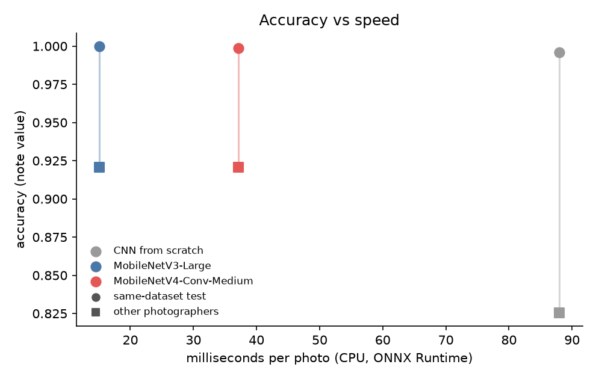

Pakistani Banknote Reader for blind people
Point your phone at a note. It says the value out loud.
نوٹ کیمرے کے سامنے رکھیں، یہ بول کر بتائے گا کہ کتنے روپے کا ہے
A free web app that reads Pakistani banknotes out loud for blind and low-vision people. It recognises all seven notes in circulation (Rs 10 to Rs 5,000), front or back, folded or upside down, and speaks in Urdu or English. It runs inside the browser, works offline after the first visit, and needs no app, no account and no upload.
Watch the project in under four minutes
The whole project in my own voice: the problem, the data, the honest numbers and a demo. Also on YouTube, or download it in 4K.
Read the transcript
Assalam o alaikum. I'm Hassan Ali Mehdi and this is a Pakistani banknote reader for blind people. You point your phone at a note and it tells you the value out loud in Urdu.
Pakistan has about 1.1 million blind people and most daily payments are still made in cash. Our seven notes differ only a little in size so a blind person usually has to ask a stranger which note is which, and trust the answer. Mixing up a 500 and a 5000 costs 4,500 rupees.
The reader is just a webpage. It reads the camera 4 times a second and speaks the value in Urdu or English with a recorded voice. So it works even on phones that have no Urdu speech. It stays silent when it is unsure because saying a wrong amount is worse than saying nothing. Once loaded, it works offline, it also vibrates a code and it works with screen readers.
I trained on a public dataset of 3,600 real phone photos, 7 notes front and back, many folded or half visible. I added a no note class with more than 1000 everyday photos so the model learns when to stay quiet.
Before trusting any number I checked whether the test photos were really new. I hashed every photo and found that 339 of the 402 test photos in a second public currency dataset are near copies of the first one. Only 63 were genuinely new. Without this check my external test would have looked perfect and meant nothing.
Training images are changed on the GPU every time they are seen: any angle, too close, half out of frame, fingers over the note, dim or yellow light, and blur. No mirror flips because the camera never sees a mirrored note.
I compared a CNN trained from scratch with two phone networks pretrained on ImageNet: MobileNet version 3, and the new MobileNet version 4. On photos from the same dataset, all three are almost perfect. On photos taken by other people the difference shows: transfer learning holds up far better. I deployed MobileNet version 3 Large, the best on validation and also the fastest.
Here are the honest numbers. 100% on unseen photos from the same dataset but 92% on photos by other people. And on those photos, it never said a wrong amount. The first number mostly shows how alike the dataset photos are. The others are what a real user would get.
The most important design decision is when to speak. On ordinary validation photos, the model is almost never wrong. So any threshold looks safe. So I calibrated on a stress test: every validation photo four times. The app speaks only above 0.68 confidence and only when three frames in a row agree.
Here is a live demo. I open the site on my phone, tap start camera and hold a note in front of it. It reads several frames per second and speaks the value with nothing installed.
Its limits. The training photos only show a few physical notes, per value. It knows the current note design but not the State Bank's new series. It reads one note at a time and it does not detect counterfeits. Next, worn notes counting a whole handful and a test with blind users is what's coming next.
Everything is open. The website, the code, the weights, the data splits are all linked. Thank you for watching.
The problem
Paying in cash is still how most of Pakistan buys things. For a person who cannot see, every note is a question: is this five hundred or five thousand? The usual answer is to ask a stranger and trust them.
What it does
- Reads the live camera about 4 times a second.
- Speaks the value in Urdu (recorded voice, so it works even on phones without Urdu speech) or English.
- Stays silent when unsure: saying a wrong amount is worse than saying nothing, so it speaks only above a confidence threshold that keeps wrong answers to at most 1 in 500 on a stress test of hard, augmented photos.
- Works with screen readers (TalkBack, VoiceOver): results are announced in a live region; every control is a large button.
What it does not do
- It does not detect counterfeits.
- It reads one note at a time.
- It knows the current note series (2005–2008 designs). The State Bank's new series will need new photos: limits.
Data: public photos, checked for copies
Three public datasets. Before trusting any number, we checked how much the public photos repeat each other.
1. Training: Pakistan Image Currency Dataset
2. "No note" photos: Imagenette
3. External test: Roboflow currency set
What the duplicate check found
- We hashed every photo (perceptual hash, 64 bits) and joined photos within 8 bits of each other.
- 339 of 402 test photos in the "external" Roboflow set are near-copies of photos in the training dataset. Only 63 are genuinely new. A model tested on that set without this check would look far better than it is.
- Inside the training dataset, near-copies are kept on the same side of the train / validation / test split (70 / 15 / 15 per class, seed 42).
| Split | Photos | Used for |
|---|---|---|
| Train | 3,429 | learning the weights |
| Validation | 735 | picking the best epoch and the speaking threshold |
| Test (same dataset, unseen photos) | 727 | headline number |
| External test (other photographers) | 63 | does it generalise beyond one dataset? |
Model: accurate enough, fast enough for a cheap phone
Three models, same data and training recipe. The question is the one a real product faces: how much accuracy do you trade for speed on a Rs 20,000 phone?
| Model | Start | Why it is here |
|---|---|---|
| CNN from scratch | random weights | Baseline: 5 conv blocks, 2.4M params. |
| MobileNetV3-Large (2019) | ImageNet | The standard phone network: depthwise convolutions, squeeze-excite, hard-swish. |
| MobileNetV4-Conv-Medium (2024) | ImageNet | The newest MobileNet ("universal inverted bottleneck"), tuned to be fast on all phone chips. |
Training for how blind people actually hold notes
- Any rotation (upside down, sideways), zoom 0.85–1.9× (too close, half out of frame), stretch, shift.
- Finger-sized patches of skin or shadow over the note.
- Dim rooms, yellow bulbs, colour casts, blur, sensor noise.
- No mirror flips: the camera never sees a note mirrored.
- 15 classes (7 notes × front/back + none); the app adds front + back.
Recipe
- AdamW, cosine schedule with warm-up, label smoothing 0.1, 40 epochs (80 for the scratch CNN).
- Photos cached on the GPU and augmented there; one NVIDIA L4 on Google Colab.
- Best epoch and speaking threshold chosen on validation photos only.
- Exported to ONNX (softmax inside) and run by ONNX Runtime Web (WebAssembly).
Results
The deployed model is MobileNetV3-Large, chosen on validation photos. On 727 unseen test photos it names the note value correctly 100.0% of the time; at the speaking threshold it would say a wrong value on 0.0% of photos and speaks on 99.4% of the photos that show a note. On 63 photos by other photographers it reaches 92.1%, and at the speaking threshold it says no wrong amount (it stays silent on 8).
| Model | Params | Test accuracy | Wrong value said | Speaks on note photos | External test | CPU ms |
|---|---|---|---|---|---|---|
| CNN from scratch | 2.36M | 99.6% | 0.0% | 93.8% | 82.5% | 88 |
| MobileNetV3-Large (deployed) | 4.22M | 100.0% | 0.0% | 99.4% | 92.1% | 15 |
| MobileNetV4-Conv-Medium | 8.45M | 99.9% | 0.0% | 99.3% | 92.1% | 37 |



Honest limits
- Trained on photos of a few physical notes per value, mostly on similar indoor backgrounds; very worn, torn or taped notes are under-represented.
- Knows the 2005–2008 note designs. The State Bank of Pakistan's new series will need new photos and retraining.
- Reads one note at a time; two overlapping notes give one answer.
- Not a counterfeit detector.
- External test has only 63 genuinely new photos after removing near-copies, so its confidence interval is wide.
- Not yet tested with blind users; that is the next step.
Test it yourself (3 commands)
git clone https://github.com/Hassan-Ali-Mehdi-3024/boltanote cd boltanote && pip install -r requirements.txt python evaluate.py # 16 bundled photos python predict.py samples/500_front_1.jpg
Frequently asked questions
What is the Pakistani Banknote Reader?
A free web app for blind and low-vision people in Pakistan. You point a phone camera at a banknote and it says the value out loud in Urdu or English. It runs in the browser, so there is no app to install.
How do I use it?
Open https://boltanote.vercel.app in a phone browser, tap Start camera, and hold a note in front of the camera. It says the value as soon as it is sure. With no camera, you can upload a photo or tap a test photo.
Which Pakistani notes can it read?
All seven notes in circulation: Rs 10, 20, 50, 100, 500, 1,000 and 5,000, front or back, including folded or upside down. It knows the 2005–2008 designs, not the State Bank's new series.
Is it free, and does it need an account?
It is free, with no account and no install. The code is open source under the MIT licence.
Does it work offline?
Yes, after the first visit. The model, the runtime and the voice clips are saved on the phone, so it keeps working and reopens with no internet.
Are my camera pictures uploaded anywhere?
No. Every picture is processed on the phone, inside the browser. Nothing is sent to a server.
How accurate is it?
It names the value correctly on 100.0% of 727 unseen photos from the same dataset, and 92.1% of 63 photos taken by other people. On those 63 photos it spoke no wrong amount and stayed silent on 8. The first number mostly shows how alike the dataset's photos are; the second is closer to real use, but 63 photos is a small test.
When does it stay silent?
It speaks only when it is at least 68% sure and three frames in a row agree, because saying a wrong amount is worse than saying nothing. The 0.68 threshold keeps wrong answers to at most 1 in 500 on a stress test of 2,940 hard, augmented validation photos.
Does it work with screen readers?
It is built for them: results are announced to TalkBack and VoiceOver through a live region, every control is a large button, and on Android it also vibrates a code for each note. It has not yet been tested with blind users; that is the next step.
Can it detect counterfeit notes?
No. It reads the value of a note and does not check whether the note is genuine. It also reads only one note at a time.
Which model does it use?
MobileNetV3-Large, pretrained on ImageNet and fine-tuned to 15 classes: seven notes, front and back, plus "no note". It runs with ONNX Runtime Web and takes about 15 ms per photo on a CPU. It was compared with a CNN trained from scratch and MobileNetV4.
What data was it trained on?
The Pakistan Image Currency Dataset (CC0) of 3,611 phone photos, plus 1,000 Imagenette photos for the "no note" class. A hash check found 339 of 402 photos in a second public dataset were near-copies of the first, so only the 63 new ones were used as the external test.
Who made it?
Hassan Ali Mehdi, as a Deep Learning semester project at Superior University, Lahore (BSCS-7A), under Dr. Munir Ahmad, November 2026.
Where are the code, weights and report?
The code, weights and data splits are at https://github.com/Hassan-Ali-Mehdi-3024/boltanote, and the report is at https://boltanote.vercel.app/report.pdf. Every link, with a second copy, is in the Everything, linked section of this page.
Is there a LinkedIn post?
No. Due to legal commitments with the company where I work, I can't use my LinkedIn for personal use while I'm employed there.
Everything, linked
Every part of the project, each with two working copies on separate hosts, so one outage never breaks a link. Machine-readable list: /project.json · guide for AI crawlers: /llms.txt · full text: /llms-full.txt.
This website
the live reader and this page (Vercel, GitHub Pages)
Copy 1 https://boltanote.vercel.appCopy 2 https://hassan-ali-mehdi-3024.github.io/boltanote/GitHub repository
code, weights, splits, notebook; second copy is the source code as a zip
Copy 1 https://github.com/Hassan-Ali-Mehdi-3024/boltanoteCopy 2 https://boltanote.vercel.app/downloads/boltanote-source.zipVideo presentation (YouTube)
under four minutes, in my own voice; also on this site, and as a 4K download
Copy 1 https://youtu.be/P0O-qhMldGICopy 2 https://boltanote.vercel.app/video/pakistani-banknote-reader-film.mp4Copy 3 https://github.com/Hassan-Ali-Mehdi-3024/boltanote/releases/download/v1.0/Pakistani_Banknote_Reader_film_4K60.mp4LinkedIn post
Due to legal commitments with the company where I work, I can't use my LinkedIn for personal use while I'm employed there.
Report (PDF)
full write-up
Copy 1 https://boltanote.vercel.app/report.pdfCopy 2 https://github.com/Hassan-Ali-Mehdi-3024/boltanote/raw/main/docs/BoltaNote_report.pdfReport (web page)
the same report, as a page
Copy 1 https://boltanote.vercel.app/report/Copy 2 https://hassan-ali-mehdi-3024.github.io/boltanote/report/Presentation slides (PDF)
the deck
Copy 1 https://boltanote.vercel.app/slides.pdfCopy 2 https://github.com/Hassan-Ali-Mehdi-3024/boltanote/raw/main/docs/slides/BoltaNote_slides.pdfModel weights (ONNX)
the deployed model, weights/boltanote.onnx
Copy 1 https://github.com/Hassan-Ali-Mehdi-3024/boltanote/raw/main/weights/boltanote.onnxCopy 2 https://boltanote.vercel.app/model/boltanote.onnxModel weights (TorchScript)
weights/boltanote_torchscript.pt
Copy 1 https://github.com/Hassan-Ali-Mehdi-3024/boltanote/raw/main/weights/boltanote_torchscript.ptCopy 2 https://github.com/Hassan-Ali-Mehdi-3024/boltanote/releases/download/v1.0/boltanote_torchscript.ptPyTorch checkpoints
weights/*.pt, all three models
Copy 1 https://github.com/Hassan-Ali-Mehdi-3024/boltanote/tree/main/weightsCopy 2 https://github.com/Hassan-Ali-Mehdi-3024/boltanote/releases/tag/v1.0Training notebook
Colab, all outputs
Copy 1 https://github.com/Hassan-Ali-Mehdi-3024/boltanote/blob/main/notebooks/BoltaNote_train.ipynbCopy 2 https://boltanote.vercel.app/notebooks/BoltaNote_train.ipynbData splits (CSV)
every file and its split
Copy 1 https://github.com/Hassan-Ali-Mehdi-3024/boltanote/blob/main/data/splits.csvCopy 2 https://boltanote.vercel.app/data/splits.csvMain dataset
Pakistan Image Currency Dataset, CC0; Kaggle and an unchanged mirror
Copy 1 https://www.kaggle.com/datasets/rafayqayyum/pakistan-image-currency-datasetCopy 2 https://github.com/Hassan-Ali-Mehdi-3024/boltanote/releases/download/v1.0/pakistan-image-currency-dataset.zipExternal test set
Roboflow currency notes, CC BY 4.0; Kaggle and an unchanged mirror
Copy 1 https://www.kaggle.com/datasets/muhammadasjadali/pakistani-currency-notesCopy 2 https://github.com/Hassan-Ali-Mehdi-3024/boltanote/releases/download/v1.0/pakistani-currency-notes-roboflow.zip"No note" photos (Imagenette)
fast.ai's ImageNet subset; project page and download
Copy 1 https://github.com/fastai/imagenetteCopy 2 https://s3.amazonaws.com/fast-ai-imageclas/imagenette2-160.tgzModel card (JSON)
inputs, outputs, threshold, metrics
Copy 1 https://boltanote.vercel.app/model_card.jsonCopy 2 https://github.com/Hassan-Ali-Mehdi-3024/boltanote/raw/main/model_card.jsonProject summary (JSON)
every result and link, for machines
Copy 1 https://boltanote.vercel.app/project.jsonCopy 2 https://hassan-ali-mehdi-3024.github.io/boltanote/project.json